Before you begin
- Complete ASA 3.
- Domina seals from ASA 3.
- Access to at least three cloisters and a party prepared for Prime-avatar battles.
Starting point
Protocrystals · Cloister of Frost
Era note: 2009 level-75-era add-on. Modern retail shortcuts and item-level solo claims are not assumed on Zenith.
Walkthrough
- Choose at least three elemental cloisters. Routes: Frost through Fei'Yin; Flames through Ifrit's Cauldron; Gales through Cape Teriggan; Storms through The Boyahda Tree; Tides through Den of Rancor; Tremors through Quicksand Caves.
- At each destination, examine the Protocrystal and choose Sugar-coated Directive. Defeat that element's Prime avatar.
- After winning, examine the Protocrystal again to apply the Domina seal and obtain its counterseal. A battlefield win without this second interaction does not finish that destination.
- Return to Qufim H-7 and examine the Trodden Snow with at least three counterseals. Three completes the mission; four, five or six increase the gil reward. Decide before handing them in.
Completion and reward
Bird key; 3,000 / 10,000 / 30,000 / 50,000 gil for 3 / 4 / 5 / 6 counterseals.
What this opens
- ASA 5
Area maps
Open a zone below, then select a map to enlarge it. Match the named floors and grid coordinates in the steps; these are reference area maps, not a live position tracker.
Fei'Yin


Ifrit's Cauldron

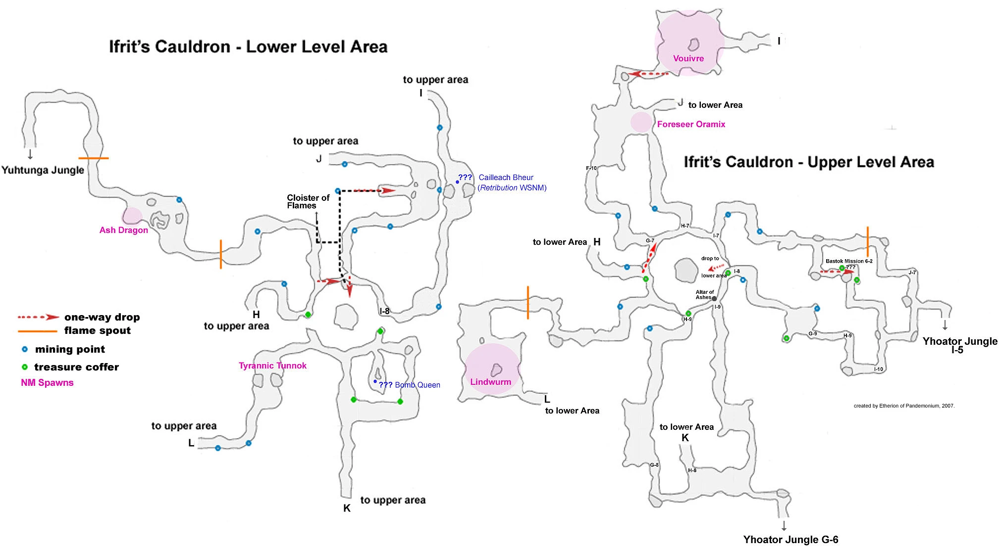


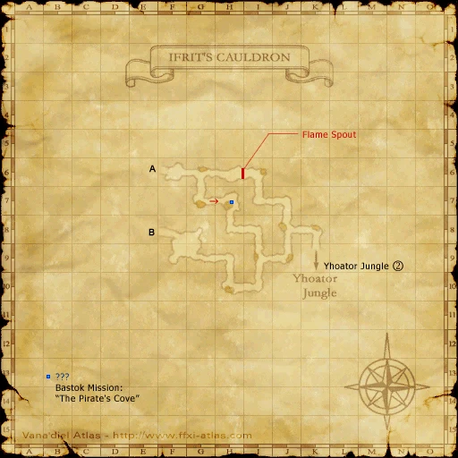


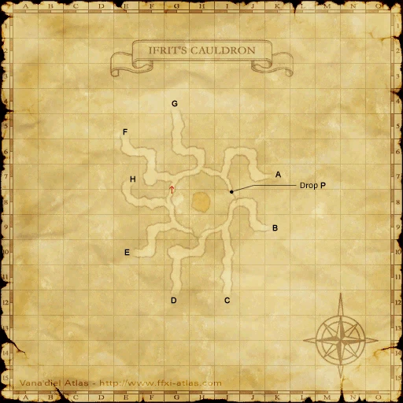


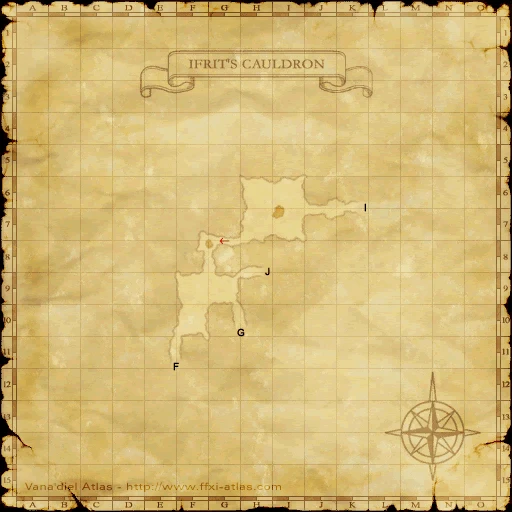


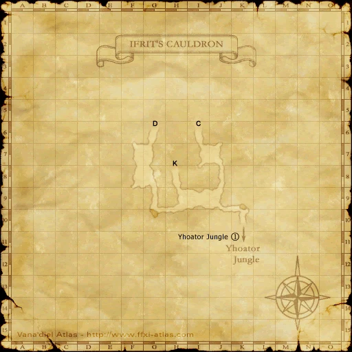


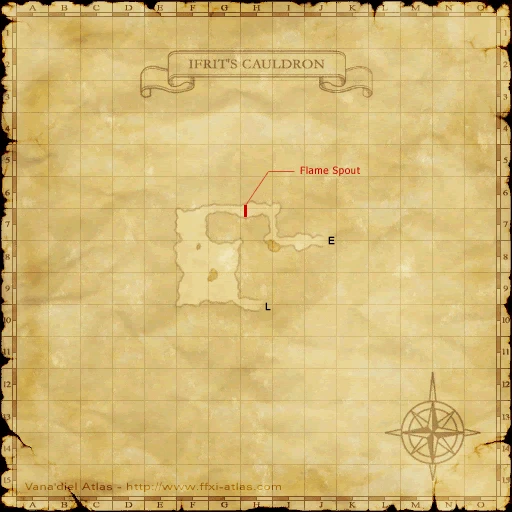


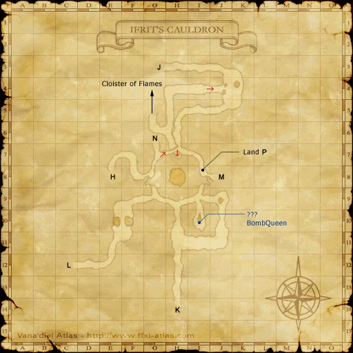


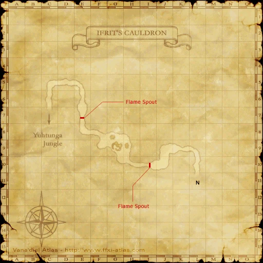

Cape Teriggan


The Boyahda Tree

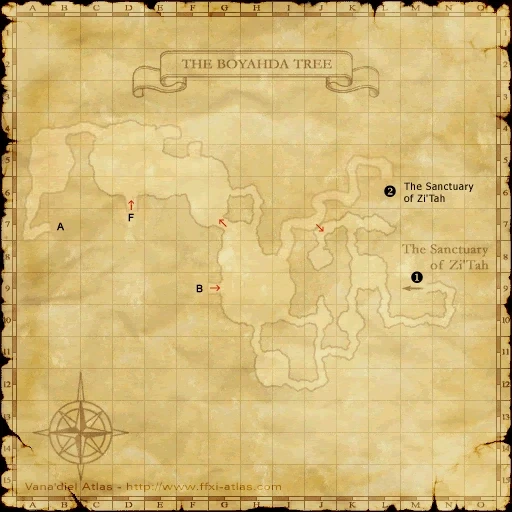


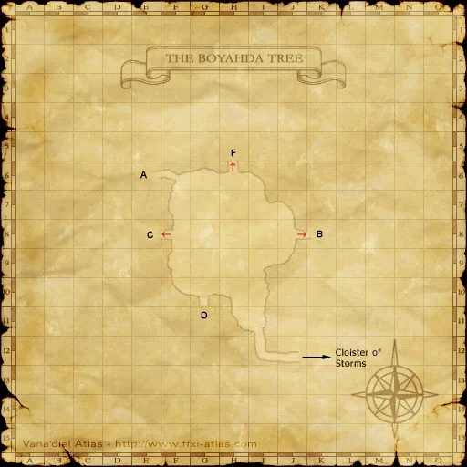


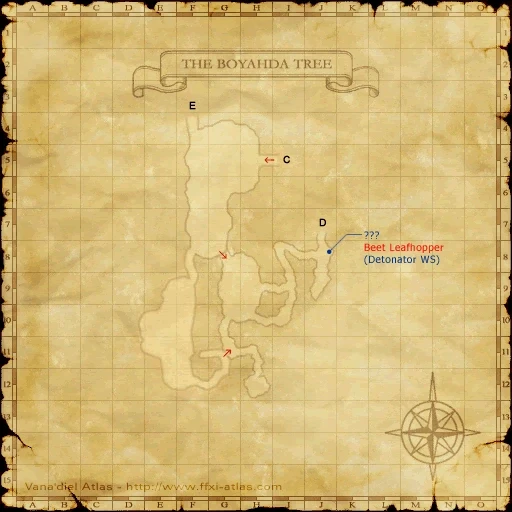


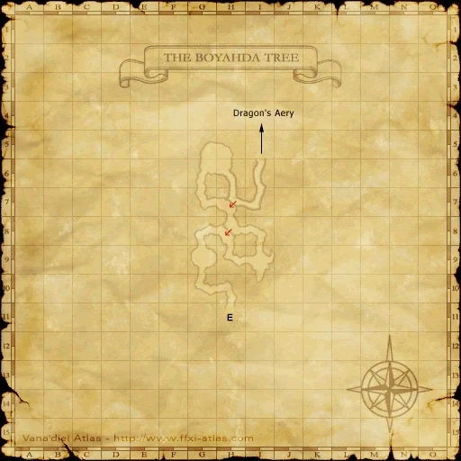

Den of Rancor

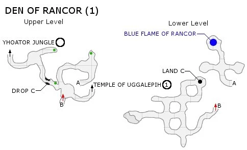


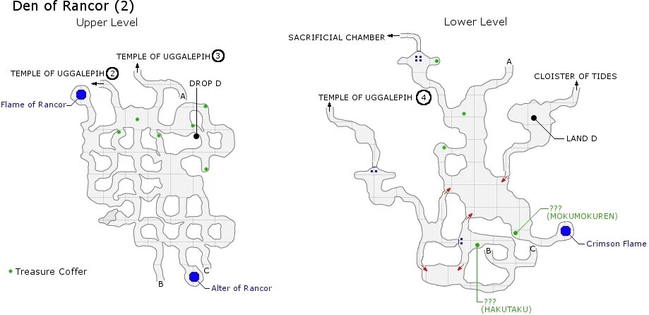


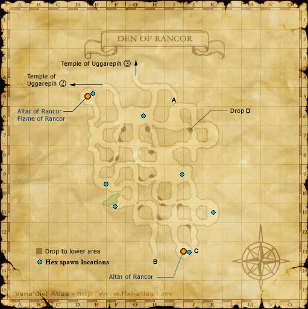


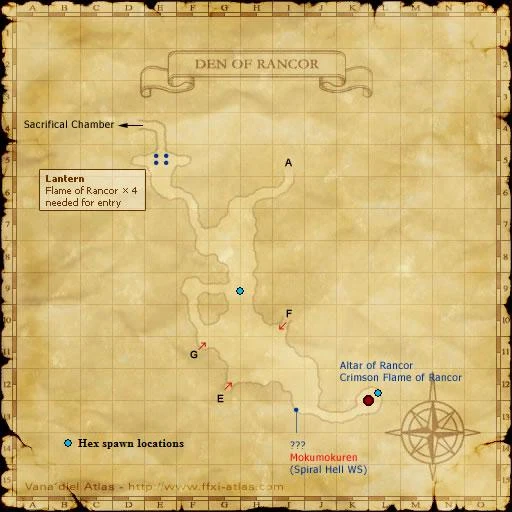


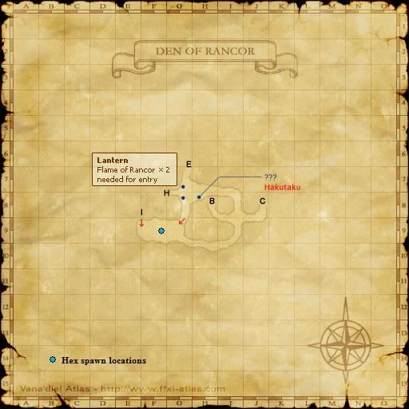


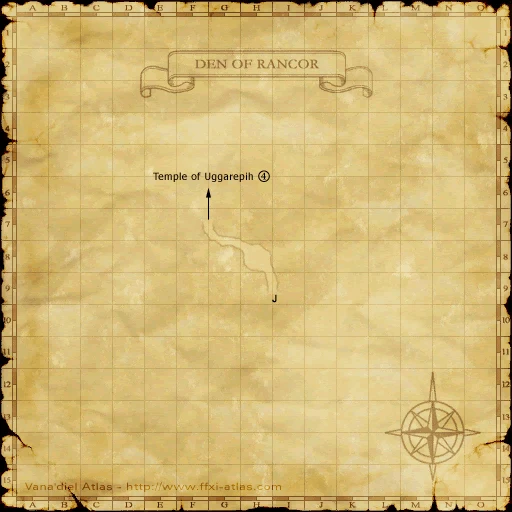


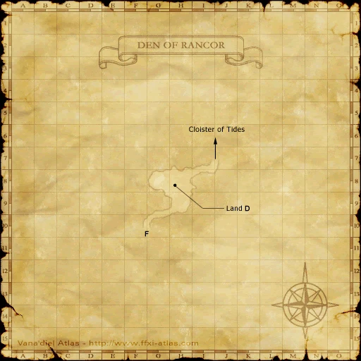


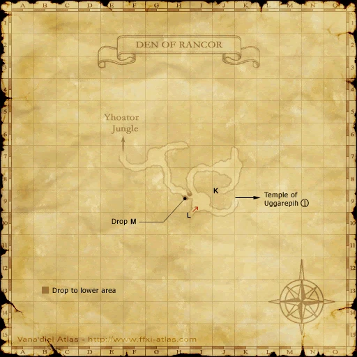


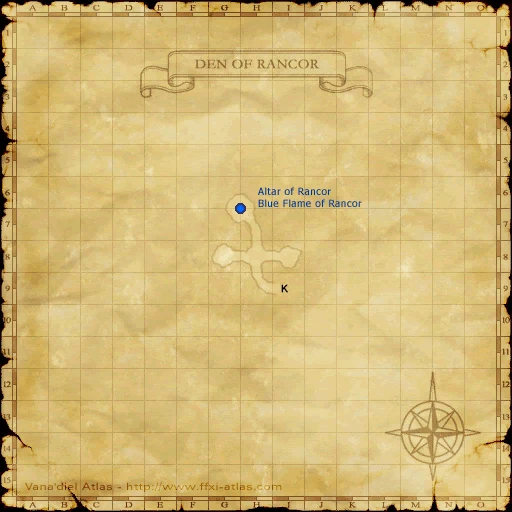


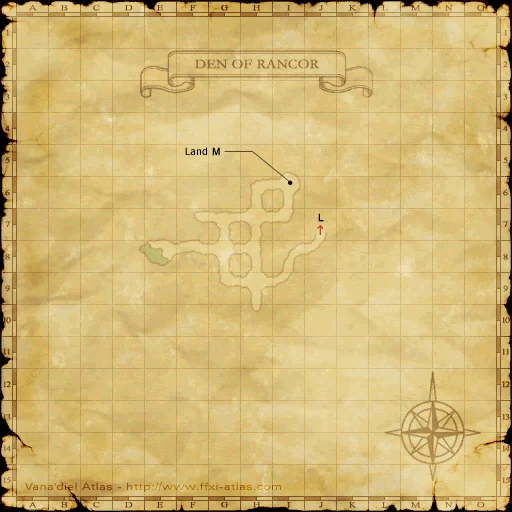

Quicksand Caves


Qufim Island


Zone guides
- Cloister of Frost
- Fei'Yin
- Cloister of Flames
- Ifrit's Cauldron
- Cloister of Gales
- Cape Teriggan
- Cloister of Storms
- The Boyahda Tree
- Cloister of Tides
- Den of Rancor
- Cloister of Tremors
- Quicksand Caves
- Qufim Island
References
Steps are an original summary of the linked walkthrough and reviewed source. Other servers’ bonus rewards are not included. How to read requirements, waits and battlefield notes.